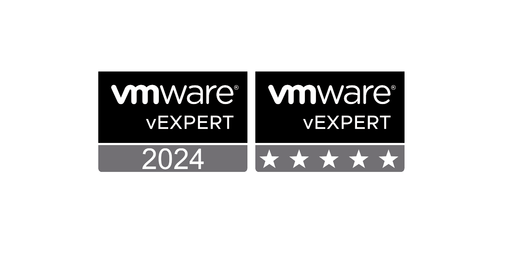
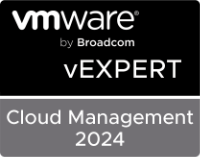
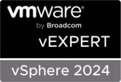

VMware vExpert 2024 | Fifth Year

VMware vExpert 2024
VMware vExpert 2020 - Present
I have been included in (2) vExpert Subprograms in 2024.
vExpert Subprograms:
- vExpert Cloud Management
- vExpert vSphere


2024 is the 4th year that I was accepted into the VMware vExpert Cloud Management subprogram and the 1st year for vExpert vSphere.
I'm immensely honored to be included in the VMware vExpert program once again, marking my fifth year of participation. The aspect of the vExpert program I find particularly commendable is its focus on acknowledging individuals for their contributions and dedication to "Giving Back". Being chosen for the vExpert program signifies a commitment to sharing knowledge and a desire to elevate not just oneself but also those within the vCommunity.
As an employee of Broadcom By VMware, one of my primary ambitions is to contribute more significantly to the vCommunity than I could as a user of VMware products.
I did more for the vCommunity in 2023 than any previous years.
- VMware Explore 2023 Presentation | Use VMware Aria to Create/Manage/Monitor Windows Servers (on-prem/cloud) [CODE2501LV]
- Hackathon Team Captain (Finished in 2nd Place) | VMware Explore 2023
- Philly VMUG - 2023 | VMware Aria Automation and Operations
- The PowerShell Podcast | “Using PowerCLI with Dale Hassinger”
- VMware Community Podcast #659
- Blogs: | More Blogs than any previous year
What is the VMware vExpert Program?
Program Overview
The VMware vExpert program is VMware's global evangelism and advocacy program. The program is designed to put VMware's marketing resources towards your advocacy efforts. Promotion of your articles, exposure at our global events, co-op advertising, traffic analysis, and early access to beta programs and VMware's roadmap. The awards are for individuals, not companies, and last for one year. Employees of both customers and partners can receive the awards. In the application, we consider various community activities from the previous year as well as the current year's (only for 2nd half applications) activities in determining who gets awards. We look to see that not only were you active but are still active in the path you chose to apply for.
Criteria
If you are interested in becoming a vExpert the criteria is simple. We are looking for IT Professionals who are sharing their VMware knowledge and contributing that back to the community. The term "giving back" is defined as going above and beyond your day job. There are several ways to share your knowledge and engage with the community. Some of those activities are blogging, book authoring, magazine articles, CloudCred task writing, active in Facebook groups, forum (VMTN as well as other non VMware) platforms, public speaking, VMUG leadership, videos and so on.
Thanks:
I have worked with a great group of people at VMware, past and present. I would like to thank everyone that has helped me on my journey called a career.
Email: Dale.Hassinger@vCrocs.info
Location: Dillsburg, PA
"9 - 5 pays the bills, 5 - 10 advances your career"